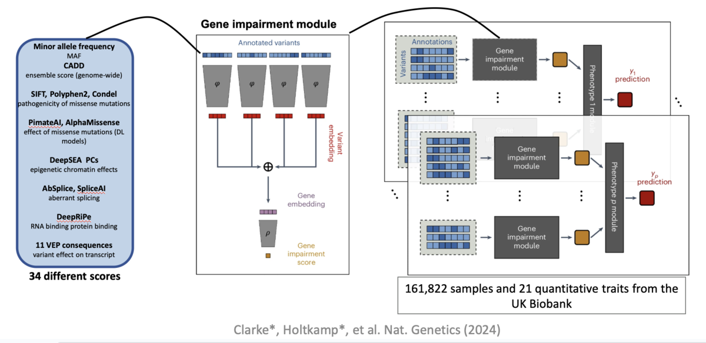
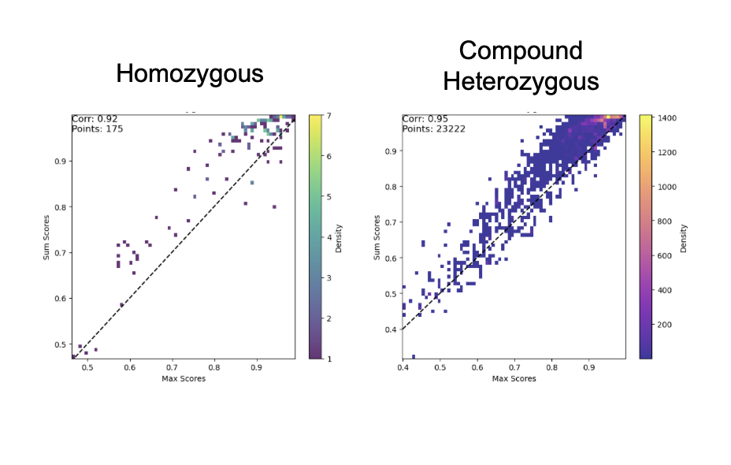
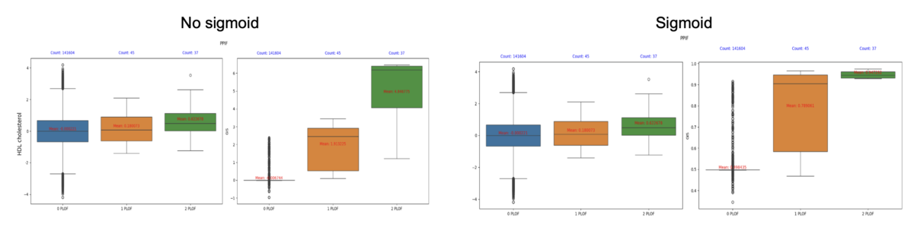
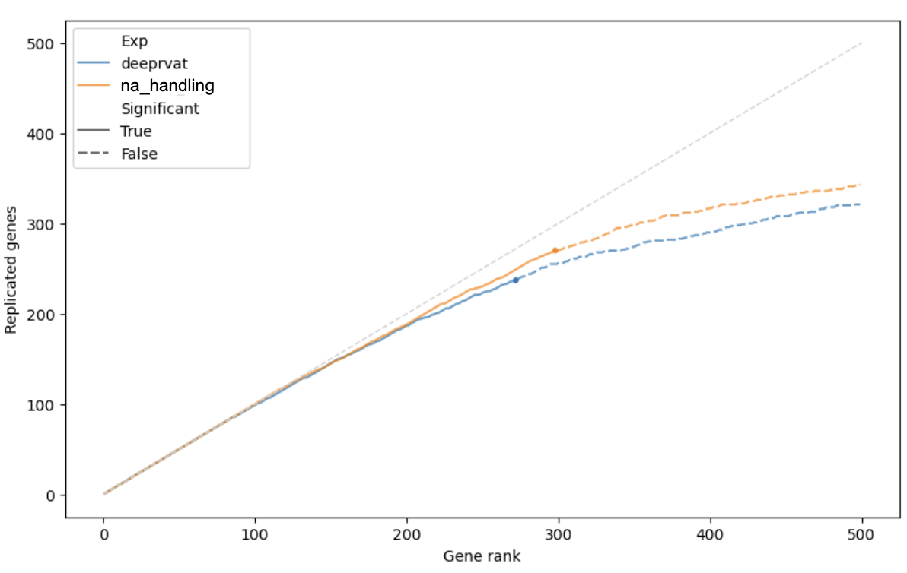
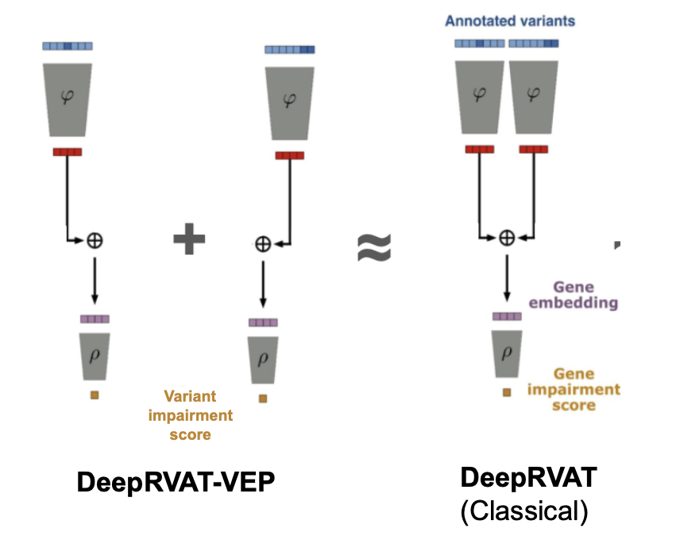
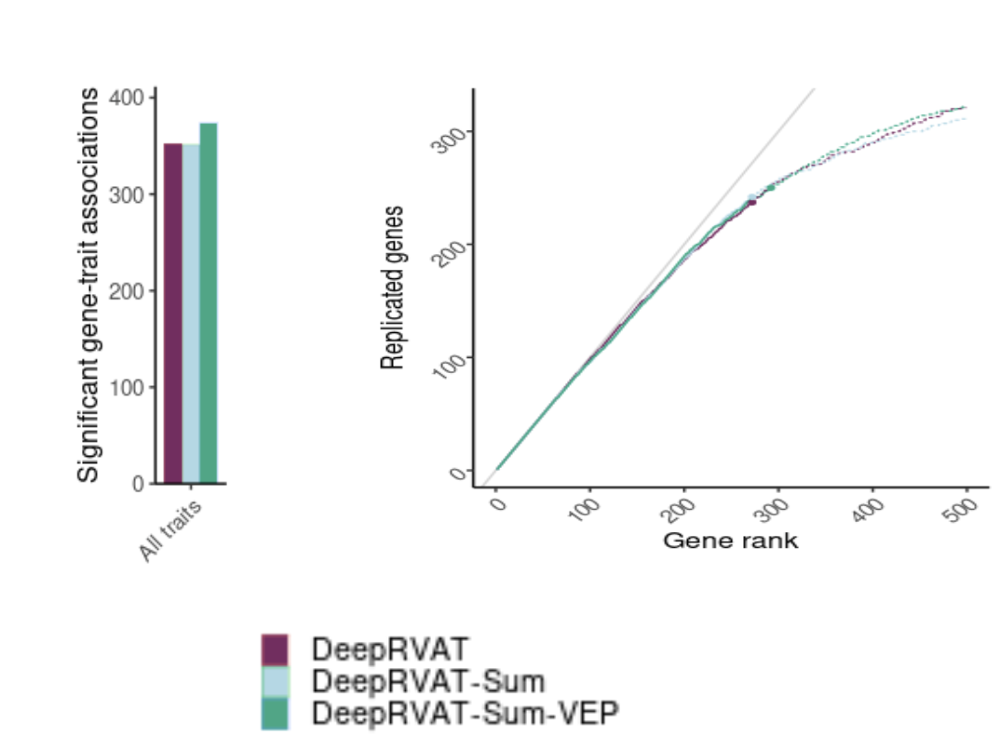

Optimizing DeepRVAT
DeepRVAT is a tool for integrating variant annotations using deep set networks to boost rare variant association testing. The pre-trained DeepRVAT model can be used to compute gene impairment scores for new genes and samples.

My project at the Gagneur Lab consisted in revisiting DeepRVAT by focusing on 4 dimensions:
Biology. The max permutation invariant function (PIF) cannot model interactions or compound effects. For example, one variant might suppress or mask another, while two moderate-impact variants together could produce a stronger effect than either alone. Shifting to a sum PIF helps address this problem. Additionally, removing the final sigmoid layer alleviates issues with burden distribution and produces scores that better align with biological expectations.


Robustness. Missing values should be treated as unknowns, not as defaults. This was addressed through the introduction of a dummy variable. Insertions and deletions (indels) can disrupt splicing or regulatory regions (frameshift in-frame risks) but such scores are often unavailable. In non-coding regions, effects are even harder to predict, though the impact remains significant. Some indels can be imputed by approximating them as single-nucleotide variants at the affected loci.

Interpretability. Genes with LoF variants can be used as markers for burden rescaling. Rescaling burdens improves interpretability and downstream compatibility. Technically, unscaled burdens are difficult to compare with other tools because they lack a clear point of reference.
We compute rescaling factors:
: median of gene burdens of individuals with no variants
: median of gene burdens of individuals with exactly one loftee_hc=1 variant
Rescaling factors (for each model):
Usability. In most samples, DeepRVAT sees a single variant, not a set. This means that the DeepRVAT variant score is actually the gene impairment score. For cases with multiple variants, summing variant-level scores instead of re-running the full end-to-end model yields comparable performance. This allows precomputation of variant-level scores, paving the way for ensemble methods that complement existing predictors such as CADD.

